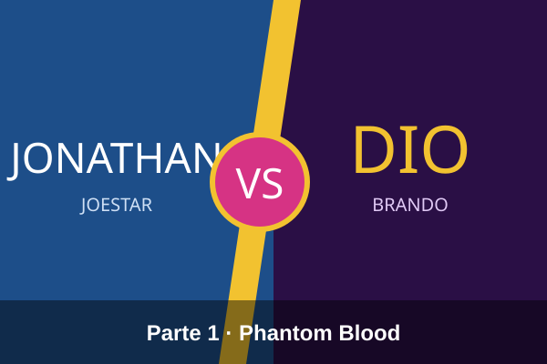
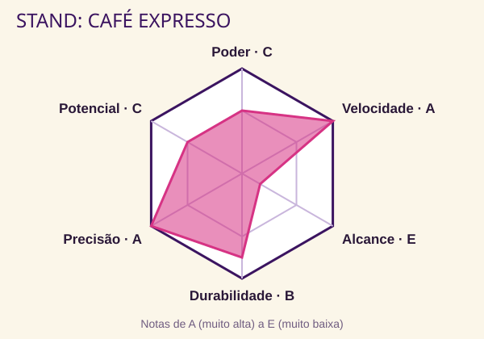
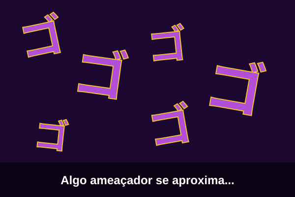

F
Fã de JoJo
Qual parte você está assistindo?
Comecei JoJo pela Parte 1, Phantom Blood. A rivalidade entre Jonathan Joestar e Dio Brando é o ponto de partida de toda a saga.

Na Parte 3, Stardust Crusaders, aparecem os Stands: poderes que surgem como uma figura ao lado de quem os usa. Inventei a ficha do meu Stand!

Quando aparece aquele "ゴゴゴゴ" na tela, eu já sei que vem coisa séria.

Fiz um mapa das partes: já são 9, e cada uma tem um JoJo diferente como protagonista.

Minha favorita é a Parte 4, Diamond is Unbreakable, que se passa na cidade de Morioh. Qual é a de vocês?